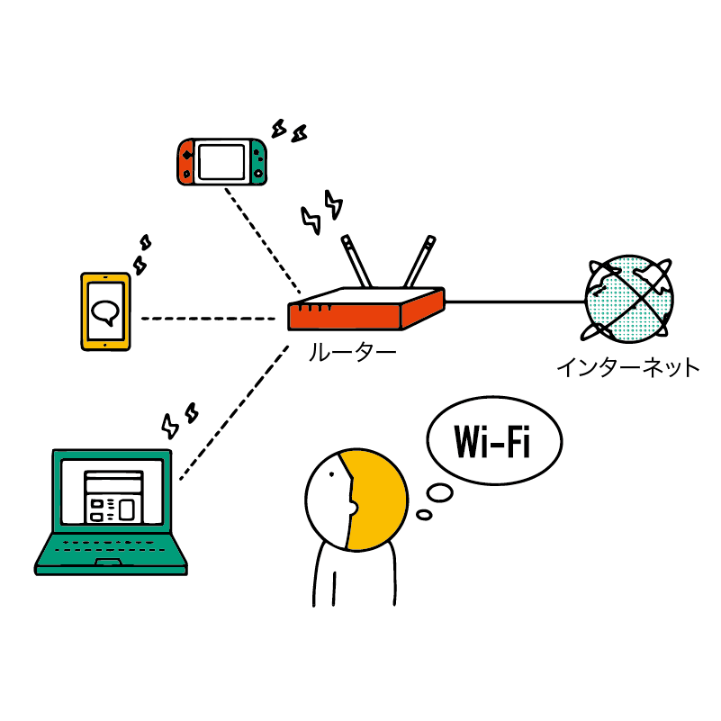
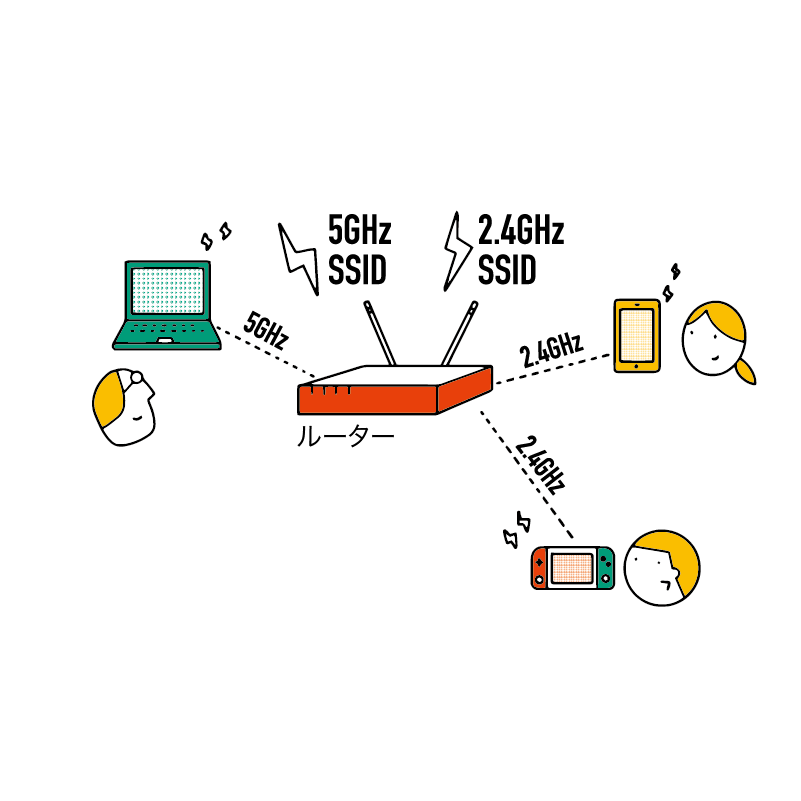
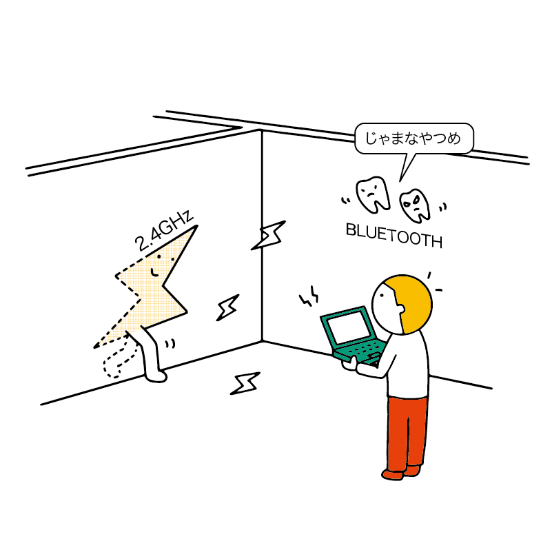
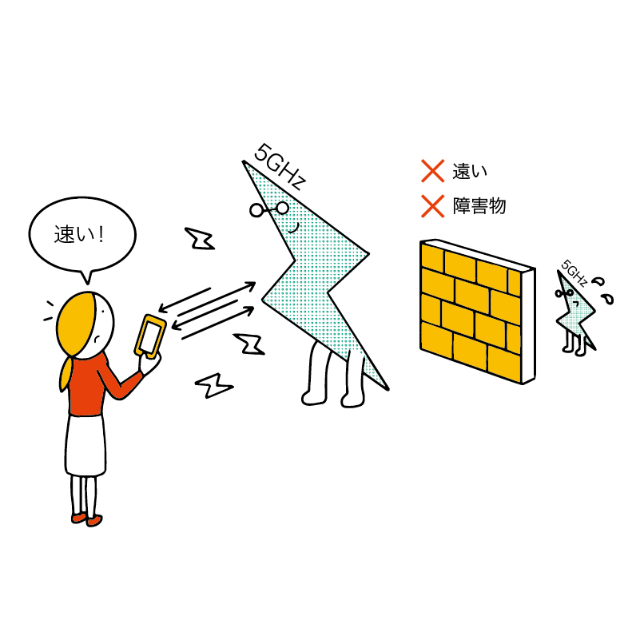

Wi-Fi に接続しよう
パソコンを Wi-Fi（ワイファイ）に接続し、インターネットにアクセスできるようにしましょう。
Wi-Fi の仕組み
Wi-Fi の準備と確認
パソコンを接続する前に、Wi-Fi の準備と確認をしましょう。
ご自宅や学校、会社などに設置してある Wi-Fi ルーター、あるいはお手持ちのポケット Wi-Fi などの SSID（アクセスポイント名）・パスワード（Key）をご確認ください。
家庭用 Wi-Fi ルーターの場合、側面や底面などに記載されている事が多いようです。
なお、学校や会社などの Wi-Fi は特別な認証システムが利用されていることがあるので、不明な点があれば管理者の方に問い合わせてください。
スマホの回線を利用して Wi-Fi 環境を用意するテザリング（tethering）も利用できます。
ただし、パソコンはスマホに比べて膨大な量の通信を行うため、スマホの契約状況次第ではすぐにデータ通信量の上限に達してしまう（いわゆる「ギガが足りない」状態になる）おそれがあります。
テザリングを使う場合は自分が契約しているプランをしっかりご確認ください。
複数の SSID がある場合
1 つの Wi-Fi ルーターに複数の SSID（アクセスポイント名） が用意されていることもあります。たとえば
- Progedu-A-2525
- Progedu-G-2525
のように A と G が付いていたり、
- Progedu-2g-2525
- Progedu-5g-2525
のように 2g(2.4g) や 5g などが付いていたりします。これらは周波数の違いを意味しています。
これらの周波数によって電波の特性に違いがあり、それぞれ得意とする状況が異なります。
もし複数の SSID を選べるときは、あなたの環境に合ったものを選ぶとよいでしょう。
2.4GHz (G)
周波数 2.4GHz を使う Wi-Fi は 壁や床などの障害物に強い という性質があります。Wi-Fi ルーターから離れた隣の部屋などでも通信できます。また、古くからある規格なので、多くの機器が対応しているというメリットもあります。
一方で、Bluetooth が発する電波や電子レンジから漏れ出す電磁波と同じ周波数であるため、電波が混雑して不安定になりやすい というデメリットがあります。
SSID では G(g)や 2g、 2.4g などと表記されます。
5GHz (A)
周波数 5GHz を使う Wi-Fi は高速な通信が可能です。基本的にはWi-Fi以外で使われていない周波数のため、電波が混雑することも少ないです。
ただし、障害物や距離に弱く、Wi-Fi ルーターから離れた場所では使えない というデメリットがあります。
SSID では A(a)や 5g と表記されます。
Wi-Fi に接続する
画面の上部にある Wi-Fi のアイコンをクリックします（Wi-Fi が ON になっていない場合はここで ON にできます）。
接続したい SSID をクリックします。
パスワードを入力し、接続 をクリックします。